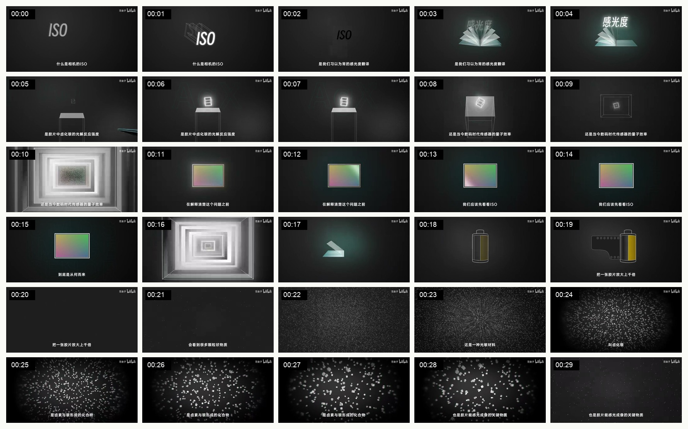
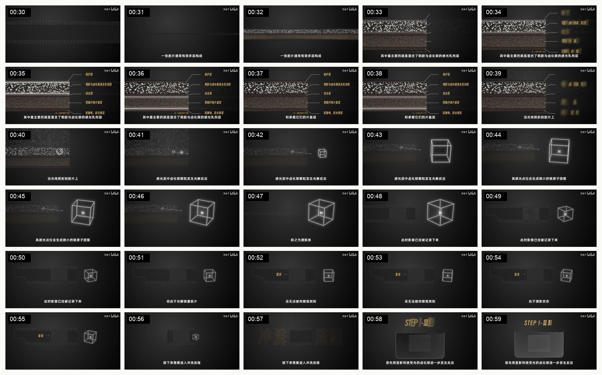
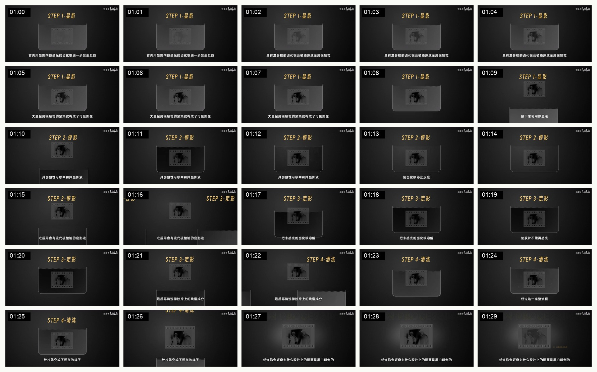
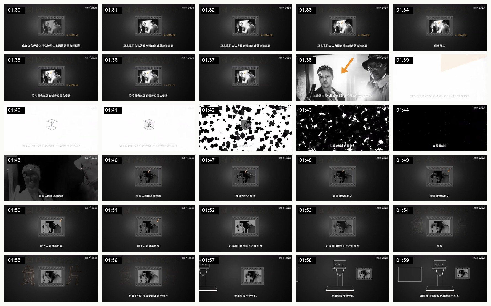

《相机 ISO》Explainer 拉片
0-2 分钟精细分析
这支片子的强点不是“画得复杂”，而是每一个画面都在服务同一个目标：把抽象概念变成一个可以被追踪、被放大、被拆开、被复用的视觉对象。
黑色暗房底、白色线稿、少量黄色和青绿色强调。风格克制，所以技术信息再多也不显脏。
不是 PPT 式换页，而是从一个对象自然过渡到下一个对象：ISO 字样、传感器、胶片、颗粒、横截面、显影容器。
先给问题，再给来源，再进微观结构。每次只引入一个新变量，观众不会同时处理太多东西。
旁白密，但画面不抢。大量画面是“慢慢显现、慢慢聚焦”，给观众留理解时间。
片段视频
0:00-0:30：开场问题与尺度切换

| 时间 | 内容任务 | 画面/动画做法 | 为什么有效 | 可迁移方法 |
|---|---|---|---|---|
| 0:00-0:04 | 提出核心问题：ISO 到底是什么。 | 大字 ISO 出现，然后切到“感光度”的扇形隐喻。 | 先不解释，先制造疑问。画面也不急着给答案，只让观众知道主题。 | 复杂主题开头不要先下定义，先把观众心里的旧理解摆出来。 |
| 0:05-0:10 | 把 ISO 的解释范围从日常词义扩到胶片和数码时代。 | 用线稿台座、发光小方块、向内推进的“传感器通道”表现微观尺度。 | 尺度转换非常明确：不是换概念，而是进入更深一层。 | 抽象概念适合用“镜头推进/进入内部”的方式，暗示从表层进入结构。 |
| 0:11-0:20 | 从问题转向来源：先回到胶片。 | 彩色照片卡片居中，然后变成胶卷/胶片，再出现放大动作。 | 观众看到“真实照片”这个锚点，再进入材料层，理解成本低。 | 讲技术不要直接进原理，先放一个大家认识的物件作为锚。 |
| 0:21-0:30 | 进入微观颗粒：卤化银是胶片能感光的关键。 | 画面被白色颗粒填满，颗粒从稀疏到密集，再从整体变成可识别的“材料”。 | 这不是装饰粒子，而是信息本身：颗粒就是被解释对象。 | MG 里粒子最好不要只当特效，要让粒子承担概念含义。 |
0:30-1:00：把材料讲成结构

| 时间 | 内容任务 | 画面/动画做法 | 为什么有效 | 可迁移方法 |
|---|---|---|---|---|
| 0:30-0:39 | 解释胶片不是单层，而是多层结构。 | 横截面从黑暗中露出，右侧标签逐个出现，重点层用黄色强调。 | 观众的注意力被限制在一个固定结构里，不需要重新找信息。 | 讲组件时，先搭“剖面模型”，再逐个点亮，不要每个组件单独做一张画面。 |
| 0:40-0:48 | 解释光照后发生反应，形成潜影。 | 左侧保留胶片截面，右侧引入发光立方体，光点被收束成内部小团。 | “潜影”本身不可见，所以用一个抽象立方体表现微观反应位置。 | 不可见过程要找一个代理对象：盒子、管道、节点、容器都可以。 |
| 0:49-0:56 | 说明影像已经记录，但人眼还看不到。 | 胶片和立方体都缩小，画面留出大量暗部，让“不可见”成为画面感受。 | 这里不是加更多元素，而是减少亮度和细节，配合“潜影状态”。 | “看不见、未完成、等待处理”这类信息，可以用低对比和空间留白表达。 |
| 0:57-1:00 | 转入冲洗流程。 | 大字“冲洗流程”暗暗浮现，然后切到 STEP 1。 | 章节标题不是完整切屏，而是从背景里浮出，保持整体风格连贯。 | 章节转场可以只改变层级，不一定要换视觉系统。 |
1:00-1:30：步骤化流程

| 时间 | 内容任务 | 画面/动画做法 | 为什么有效 | 可迁移方法 |
|---|---|---|---|---|
| 1:00-1:08 | STEP 1：显影，使影像显出来。 | 标题固定在上方，胶片在容器里，影像逐渐显现。 | 变化只发生在“胶片内容”上，观众能清楚感知因果。 | 流程动画最好固定舞台，只让关键状态变化。 |
| 1:09-1:15 | STEP 2：停影，终止反应。 | 容器仍在，液体从下方进入，胶片位置稳定。 | 同一套容器复用，说明这是同一条工艺链，不是新概念。 | 连续流程要复用场景资产，降低观众重新理解成本。 |
| 1:16-1:21 | STEP 3：定影，去掉未感光材料。 | 背景液体高度/颜色变化，胶片仍是视觉中心。 | 观众能把“液体改变”理解成“处理阶段改变”。 | 同一个对象经历多阶段处理，比频繁换图更有叙事感。 |
| 1:22-1:30 | STEP 4：清洗，得到最终底片。 | 画面逐渐从工艺容器回到单张胶片，准备进入下一个问题。 | 流程结束后，视觉对象回收成一个“结果物”，方便后续继续解释。 | 每段解释结束时，要把过程收束成一个可继续使用的对象。 |
1:30-2:00：制造反常识问题

| 时间 | 内容任务 | 画面/动画做法 | 为什么有效 | 可迁移方法 |
|---|---|---|---|---|
| 1:30-1:37 | 提出底片黑白颠倒的疑问。 | 底片居中，右侧小字提示问题，画面整体保持低亮。 | 它让观众先看到“不对劲”，再听解释。 | 好的 explainer 常用“反常识画面”引出下一段，而不是平铺直叙。 |
| 1:38-1:45 | 解释曝光多的部分为什么更黑。 | 从照片跳到白底/黑色颗粒，再回到暗底照片。 | 白底黑粒子的强反差，把“金属银颗粒越多越黑”直接画出来。 | 当概念本身是对比关系，就用画面明暗/正负片切换表达。 |
| 1:46-1:56 | 把黑白颠倒命名为负片，并解释曝光少的部分更亮。 | 照片局部高亮、黄色箭头标注、背景出现巨大“负片”字样。 | 命名不是孤立出现，而是贴在刚刚解释完的现象上。 | 术语最好在现象之后出现，不要先扔术语。 |
| 1:57-2:00 | 转入“如何还原成正常照片”。 | 胶片移动到画面右侧，左侧出现放大机和相纸的位置。 | 画面提前布置下一段的道具，转场不是硬切。 | 下一段的核心道具可以提前入场，形成自然衔接。 |
这 2 分钟最值得学的设计原则
- 一个概念对应一个可追踪对象。 ISO、胶片、颗粒、横截面、显影容器都不是装饰，而是当前解释对象。
- 每次只改变一个变量。 讲多层结构时构图不变，只加标签；讲流程时容器不变，只换步骤和液体。
- 转场靠语义，不靠花活。 照片变胶片、胶片放大成颗粒、颗粒进入剖面、剖面进入冲洗流程，每一步都有解释理由。
- 字幕是底层锚，不是画面主角。 画面已经承担主要解释，字幕只补一句关键判断。
- 风格服务主题。 暗房、胶片、显影、传感器这些主题天然适合暗色背景和光线质感，所以视觉风格不是随机选择。
- 反常识点要被画出来。 “曝光越多反而越黑”这类反常识，必须通过黑白反转、颗粒数量、箭头标注让观众看见。
对我们做 Loop Engineering 的启发：不要把每句旁白都翻译成一张新画面。应该先找到一个能贯穿的核心视觉对象，比如“人被困在循环里”或“提示词循环”，然后让它在不同段落里被放大、拆开、重组、外移。真正的 MG 不是图多，而是变化有因果。